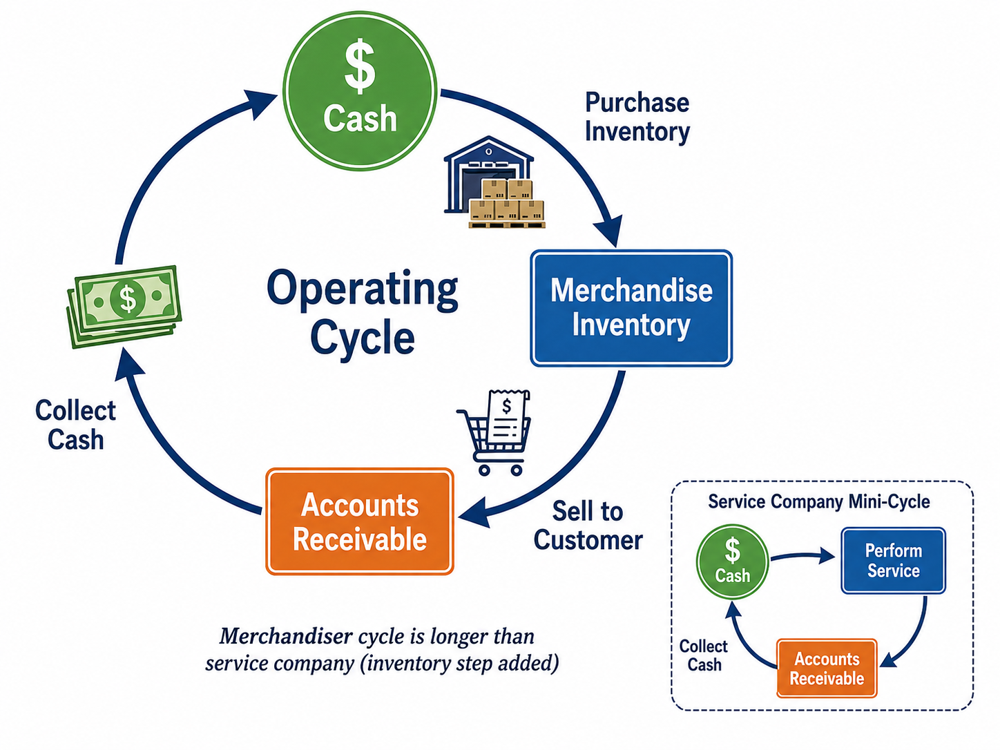
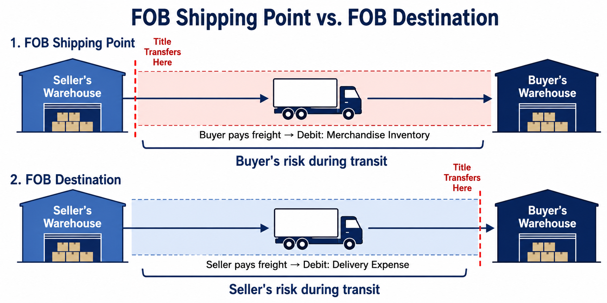

Purchasing, Selling, and Reporting for Merchandising Businesses
Each link opens the lecture video at that topic. Timestamps are approximate — a topic may begin a few seconds before or after the mark, so step back a little if you land mid-sentence.
In previous chapters, the examples focused on service companies—businesses that earn revenue by providing services, such as consulting firms, law offices, and accounting practices. A merchandising company (or merchandiser) operates differently: it earns revenue by purchasing goods from suppliers and reselling them to customers at a higher price. The merchandise that a company buys and sells is called merchandise inventory.
Merchandisers are not the same as manufacturers. A manufacturer creates goods from raw materials, while a merchandiser purchases finished goods and resells them without further processing. Merchandisers fall into two broad categories:
The fundamental profit model of a merchandiser is straightforward: purchase goods at one price and sell them at a higher price. The difference between the sales price and the cost of the goods is the merchandiser’s gross profit. For example, if a merchandiser purchases goods for $70 and sells them for $100, the gross profit on that transaction is $30.
Every business follows an operating cycle—the series of activities a company performs to generate revenue and ultimately convert it back into cash. For a merchandiser, the operating cycle consists of three main steps:

This cycle is sometimes called the cash-to-cash cycle because it traces the path from spending cash on inventory through converting that inventory back to cash via sales. The length of the operating cycle varies by industry. A grocery store may turn over its inventory in days, while a jewelry retailer may take months to sell its products.
Before diving into purchase and sales transactions, it is helpful to understand the overall structure of a merchandiser’s income statement. In earlier chapters, the income statement for a service company was relatively simple: Service Revenue minus Operating Expenses equals Net Income. A merchandiser’s income statement is more detailed because it must account for the cost of the merchandise sold.
Most merchandising companies use the multi-step income statement, which contains several important subtotals that highlight key financial relationships. The basic structure is as follows:
The most important new element here is Cost of Goods Sold (COGS). This is an expense account that represents the cost the company paid to acquire the inventory that was actually sold to customers during the period. It appears immediately below Sales Revenue and is subtracted to arrive at Gross Profit—the profit earned before considering any operating expenses.
Cost of Goods Sold is one of the most important concepts in merchandising accounting. To understand it, consider an analogy: COGS works much like a prepaid expense. Recall that when a company pays for insurance in advance, the payment is initially recorded as an asset (Prepaid Insurance), and the expense is recognized gradually as the coverage is consumed. The pattern for merchandise inventory is the same:
Equipment, supplies, and merchandise inventory all follow the same fundamental pattern: Asset → Expense. Cash is paid first, the item is capitalized as an asset, and the expense is deferred until the asset is consumed or sold. The only difference is which specific accounts are used:
To illustrate the basic mechanics, assume a merchandiser purchases goods for $70 cash and later sells them for $100 cash.
Step 1: Purchasing the Inventory
At this point, the company has simply exchanged one asset (Cash) for another (Merchandise Inventory). No expense is recorded yet—the $70 is capitalized as an asset.
Step 2: Selling the Goods
When the goods are sold, two journal entries are required. This is a critical point in merchandising accounting: every sale generates two entries.
The first entry uses the sales price ($100). The second entry uses the purchase price (cost) ($70). These are always different amounts. Do not confuse them: Sales Revenue is always recorded at the selling price, while Cost of Goods Sold is always recorded at the original cost.
Analyzing these transactions through the accounting equation (Assets = Liabilities + Stockholders’ Equity) helps confirm the logic.
| Transaction | Assets | Liabilities | Stockholders’ Equity |
|---|---|---|---|
| Purchase inventory for $70 cash | Merch. Inv. +$70, Cash −$70 (Net: $0 change) |
No change | No change |
| Sell goods for $100 cash (cost $70) | Cash +$100, Merch. Inv. −$70 (Net: +$30) |
No change | Sales Rev. +$100, COGS −$70 (Net: +$30) |
Notice that after both transactions are complete, total assets have increased by $30 and stockholders’ equity has increased by $30. This $30 represents the gross profit earned from buying at $70 and selling at $100. The equation remains in balance.
Before proceeding with purchase and sales transactions, it is important to understand the two inventory accounting systems that businesses use to track merchandise.
Under the perpetual system, every purchase increases the Merchandise Inventory account, and every sale decreases it while simultaneously recording Cost of Goods Sold. The inventory balance is therefore always current.
Under the periodic system, purchases are recorded in a temporary account called “Purchases” rather than directly in Merchandise Inventory. At the time of sale, only the revenue entry is recorded—no COGS entry is made until the end of the period, when a physical count determines ending inventory and COGS is calculated as a “plug figure”:
For this course, all journal entries and discussions are based on the perpetual inventory system unless stated otherwise. The periodic system is covered in the textbook appendix for reference, but will not be tested.
The operating cycle of a merchandiser begins with purchasing merchandise inventory from vendors. This section examines the complete range of purchase-related transactions, including purchases on account, purchase discounts, returns and allowances, and transportation costs.
When a company purchases merchandise inventory, the entry depends on whether the purchase is made with cash or on account:
In both cases, the debit goes to Merchandise Inventory because the company has acquired an asset. The credit depends on whether the company paid immediately (Cash) or agreed to pay later (Accounts Payable).
When purchases are made on account, the seller typically specifies credit terms in the contract. These terms offer the buyer a discount as an incentive for early payment.
A common credit term is 2/10, n/30 (read: “two-ten, net thirty”). This means:
Another example: 3/15, n/30 means a 3% discount if paid within 15 days, with the full amount due in 30 days.
Purchases are recorded using the Gross Method. Under this approach, the purchase and the corresponding Accounts Payable are initially recorded at the full, gross amount—as though no discount will be taken. The discount is recognized only at the time of payment if the buyer actually pays within the discount period.
There are two methods for recording purchase discounts: the Gross Method and the Net Method. The video lectures cover both approaches, but for this course, focus on the Gross Method for purchases for all assignments and exams.
On June 3, Smart Touch Learning purchases $5,250 of merchandise inventory on account with credit terms of 3/15, n/30.
June 3 — Purchase on account:
Under the Gross Method, the full $5,250 is recorded regardless of the available discount.
Scenario A: Payment within the discount period (June 15)
Discount = $5,250 × 3% = $157.50. Cash paid = $5,250 − $157.50 = $5,092.50.
The $157.50 is credited to Merchandise Inventory because taking the discount means the actual cost of the inventory is now $5,092.50, not $5,250. The discount reduces the cost basis of the asset.
Scenario B: Payment after the discount period (June 24)
No discount is received. The full $5,250 is paid, and the Merchandise Inventory account remains unchanged at its original recorded cost.
Why is the purchase discount credited to Merchandise Inventory rather than recorded as revenue? Because the discount reduces the amount you actually paid for the inventory. The true cost of the asset is what you ended up spending. If you took a 2% discount on a $100 purchase, your inventory really cost you $98, not $100. The discount is not “income”—it is simply a reduction in cost.
Sometimes the goods received from a supplier are damaged, defective, or otherwise not as ordered. In such cases, the buyer has two options:
In either case, the buyer’s obligation to the seller decreases (Accounts Payable decreases), and the recorded value of inventory decreases. The journal entry is:
On June 10, Smart Touch Learning purchases 15 tablets on account at $350 each ($5,250 total) with terms of 3/15, n/30. On June 15, five defective tablets ($1,750) are returned. Payment is made on June 20.
June 10 — Purchase:
June 15 — Return of 5 tablets:
June 20 — Payment within discount period:
After the return, the outstanding Accounts Payable balance is $5,250 − $1,750 = $3,500. The 3% discount applies to the remaining balance: $3,500 × 3% = $105. Cash paid = $3,500 − $105 = $3,395.
When goods have been returned before payment, any purchase discount is calculated on the remaining balance of Accounts Payable—not on the original purchase amount. In the example above, the discount is based on $3,500 (the net amount owed), not $5,250 (the original purchase).
Purchase agreements include shipping terms that determine two important things: (1) who pays the freight charges, and (2) when legal title to the goods transfers from seller to buyer. The two standard shipping terms are:

Suppose goods are shipped on December 29 and are still in transit on December 31 (the balance sheet date). On whose balance sheet should this inventory appear?
When the buyer pays for shipping under FOB Shipping Point terms, the freight cost is recorded as an increase to Merchandise Inventory, not as a separate expense.
Why is Freight-in debited to Merchandise Inventory rather than to a delivery expense account? Under accounting principles, the cost of an asset includes all expenditures necessary to get the asset ready for its intended use. The buyer paid the freight charge to transport the goods to its warehouse so they can be sold. This delivery cost is therefore part of the inventory’s cost and will become an expense only later, as part of Cost of Goods Sold, when the inventory is sold.
Smart Touch Learning purchases $5,000 of goods on account with a $400 freight charge prepaid by the seller and included on the invoice, under terms of FOB Shipping Point, 3/5, n/30.
Total invoice = $5,000 (goods) + $400 (freight) = $5,400.
If payment is made within the discount period, the 3% discount applies only to the merchandise cost ($5,000), not to the freight charge:
Discount = $5,000 × 3% = $150. Cash paid = $5,400 − $150 = $5,250.
Purchase discounts apply only to the cost of the merchandise itself. Freight charges paid by the buyer are not eligible for purchase discounts.
When the seller pays the delivery charge under FOB Destination terms, this cost is called Freight-out. For the seller, this is simply an operating expense—a cost of doing business that appears on the income statement under Operating Expenses.
Do not confuse these two concepts. Freight-in is paid by the buyer and increases Merchandise Inventory (an asset). Freight-out is paid by the seller and is recorded as Delivery Expense (an operating expense). They appear in completely different places on the financial statements.
The Merchandise Inventory account is a permanent account (an asset) that carries a beginning balance from the previous period. The following T-account summarizes all the transactions that affect it:
The ending balance of Merchandise Inventory represents the cost of goods still on hand—unsold inventory that remains as an asset on the balance sheet.
Net Purchases is the net cost of merchandise acquired during the period after accounting for returns, allowances, and discounts:
When Freight-in is added to Net Purchases, the result is the total additional cost of merchandise acquired during the period. This leads to the fundamental Cost of Goods Sold equation:
This equation can also be expressed as:
\[\text{Beginning Inventory} + \text{Net Purchases} + \text{Freight-in} = \text{COGS} + \text{Ending Inventory}\]During the year, Smart Touch Learning records the following:
| Purchases | $281,750 |
| Less: Purchase Returns & Allowances | (61,250) |
| Less: Purchase Discounts | (4,410) |
| Net Purchases | $216,090 |
| Add: Freight-in | 14,700 |
| Net Cost of Inventory Purchased | $230,790 |
The second major category of merchandising transactions involves selling merchandise to customers. As discussed earlier, every sale requires two journal entries: one to record the revenue and one to record the cost of goods sold.
On June 19, Smart Touch Learning sells two tablets for $500 each ($1,000 total) for cash. The cost of the tablets was $700.
On June 15, Smart Touch Learning sells 5 tablets at $500 each ($2,500 total) on account. The cost of the goods is $1,750.
When a company sells merchandise on account, it may offer the customer credit terms with a discount for early payment. Just as with purchases, two recording methods exist: the Gross Method and the Net Method. This section presents both methods so that you understand how each works.
The video lectures explain sales discounts using the Net Method. However, for this course, focus on the Gross Method for sales on all assignments and exams, unless instructed otherwise. The Net Method is presented below so that you can follow the video lecture explanations, but the Gross Method is the required approach.
Under the Gross Method for sales, the sale and the Accounts Receivable are initially recorded at the full gross amount—as though no discount will be taken by the customer. If the customer pays within the discount period, an adjustment is needed to record the discount.
On June 21, Smart Touch Learning sells 10 tablets at $500 each ($5,000 total) on account with credit terms of 2/10, n/30. The goods cost $3,500.
June 21 — Date of Sale:
Scenario A: Customer pays within the discount period (by July 1)
Discount = $5,000 × 2% = $100. Cash received = $5,000 − $100 = $4,900.
Sales Discounts is a contra-revenue account (normal debit balance). It reduces Sales Revenue on the income statement. The Accounts Receivable is fully cleared at the original $5,000.
Scenario B: Customer pays after the discount period (by July 21)
No discount is granted. The full amount is collected, and no adjustment is necessary.
Under the Net Method for sales, the sale and Accounts Receivable are initially recorded at the discounted (net) amount—assuming the customer will take the discount. If the customer pays within the discount period, no adjustment is needed. If the customer pays late (after the discount period), the extra amount received is recorded as Sales Discounts Forfeited.
Using the same facts: $5,000 sale, terms 2/10, n/30, cost $3,500. Net amount = $5,000 − ($5,000 × 2%) = $5,000 − $100 = $4,900.
Date of Sale:
Scenario A: Customer pays within the discount period
Because the sale was recorded at $4,900 and the customer paid $4,900, no adjustments are needed.
Scenario B: Customer pays after the discount period
The customer must pay the full $5,000. However, only $4,900 was recorded in Accounts Receivable. The difference of $100 is credited to Sales Discounts Forfeited.
Sales Discounts Forfeited is an adjunct revenue account with a normal credit balance. It represents additional revenue earned because the customer did not take advantage of the discount. On the multi-step income statement, Sales Discounts Forfeited does not appear as part of Net Sales Revenue. Instead, it is reported under Other Income and Expenses near the bottom of the income statement.
| Aspect | Gross Method | Net Method |
|---|---|---|
| Initial recording | Full gross amount (e.g., $5,000) | Discounted net amount (e.g., $4,900) |
| Customer pays early | Record Sales Discounts (contra-revenue) | No adjustment needed |
| Customer pays late | No adjustment needed | Record Sales Discounts Forfeited (other income) |
| I/S presentation | Sales Discounts reduces Sales Revenue at the top | Sales Discounts Forfeited appears under Other Income at the bottom |
For this course, use the Gross Method for both purchases and sales on all assignments and exams, unless instructed otherwise. The video lectures use the Gross Method for purchases but the Net Method for sales—both methods are presented in this chapter so you can follow along with the lectures while focusing on the required approach for coursework.
Notice a consistent logic: under the Gross Method (for both purchases and sales), transactions are always recorded at the full amount first, and any discount is recognized only when it is actually taken. This approach is conservative—it assumes the discount will not be taken until evidence proves otherwise.
Just as buyers may return defective goods to their suppliers, customers may return goods to the merchandiser. A sales return occurs when the customer sends the goods back. A sales allowance occurs when the customer keeps the goods but receives a price reduction. Unlike purchase returns and allowances (which involve a single entry), sales returns and allowances involve two stages of journal entries.
Under the revenue recognition standard, a company should recognize revenue only in the amount it expects to eventually realize. If a company knows from historical data that a certain percentage of its sales will be returned, it cannot simply report the full sales amount as revenue. Instead, the company must make an adjusting entry at the end of the period to account for estimated future returns.
Smart Touch Learning had sales of $1,000,000 and cost of goods sold of $600,000 for the year ended December 31, 2026. Based on historical data, the company estimates that approximately 4% of merchandise sold will be returned.
Estimated returns at sales price: $1,000,000 × 4% = $40,000
Estimated returns at cost: $600,000 × 4% = $24,000
Adjusting Entry — Revenue side:
Adjusting Entry — Cost side:
The first entry reverses Sales Revenue and creates a liability (Refunds Payable) representing the company’s obligation to refund customers. The second entry reverses Cost of Goods Sold and creates an asset (Estimated Returns Inventory), anticipating that the returned goods will come back into the company’s possession.
When the actual return occurs in the subsequent period, the company settles its obligation. The journal entries involve clearing the estimated accounts that were set up by the adjusting entry:
On January 20, 2027, a customer returns merchandise that had a sales price of $2,000 and a cost of $800. The original purchase was made with cash.
Entry 1: Issue the refund
Entry 2: Return goods to inventory
Notice that the actual return entries do not involve any income statement accounts (no Sales Revenue and no COGS). Why? Because those accounts were already adjusted at the end of the previous period through the estimating entry. If we debited Sales Revenue again when the actual return occurred, we would be double-counting the revenue reduction. The actual return entries simply clear the balance sheet accounts (Refunds Payable and Estimated Returns Inventory) that were created by the estimate.
For standard exam and homework purposes, it is generally assumed that the estimate was accurate. However, in practice, actual returns may exceed the estimated amount. If the excess occurs, the company must record an additional reversal in the current period for the unanticipated portion:
A sales allowance is a price reduction granted to the customer. The key difference from a sales return is that no physical goods come back. Because there is no movement of inventory, the journal entry for an actual sales allowance affects only the revenue/refund side:
On January 28, 2027, Smart Touch Learning grants a $100 sales allowance for goods damaged in transit. The goods were sold on account and remain unpaid.
There is no second entry for inventory because the customer is keeping the merchandise. The allowance simply reduces the amount the customer owes (or results in a cash refund if already paid).
When estimating future returns and allowances at period end, the adjusting entry differs slightly:
At the end of each accounting period, companies conduct a physical count of their inventory. If the physical count reveals fewer goods on hand than the accounting records indicate, the difference is called inventory shrinkage. Shrinkage can result from theft, damage, spoilage, or recording errors.
Even though these goods were not “sold” to a customer, the inventory is gone and must be removed from the books. The standard adjusting entry treats inventory shrinkage as if it were a sale:
Smart Touch Learning’s Merchandise Inventory account shows an unadjusted balance of $31,530. A physical count reveals only $30,000 of inventory on hand. The shrinkage is $31,530 − $30,000 = $1,530.
After this adjustment, the Merchandise Inventory account balance matches the physical count ($30,000), and the lost inventory has been absorbed into Cost of Goods Sold as an expense.
Even under a perpetual inventory system that continuously tracks inventory, a physical count is still necessary at least once a year. The computerized records may not capture losses from theft, damage, or clerical errors. The physical count is the reality check that ensures the books reflect what is actually on the shelves.
Closing the accounts of a merchandising company follows the same four-step process used for a service company (Chapter 4). The only difference is that a merchandiser has additional temporary accounts that must be closed:
The following accounts are unique to merchandising companies and must be closed at the end of each period:
Note: Merchandise Inventory and Estimated Returns Inventory are permanent accounts (assets) and are not closed.
The multi-step income statement is the most commonly used format for merchandising companies. Unlike the single-step income statement (which simply groups all revenues and all expenses into two totals), the multi-step format provides several useful subtotals.
The top of a multi-step income statement begins with Net Sales Revenue, which is calculated differently depending on whether the Gross Method or Net Method was used for recording sales.
Under the Gross Method, Sales Revenue is initially recorded at the full amount, so contra-revenue accounts (Sales Discounts, Sales Returns & Allowances) must be deducted to arrive at Net Sales Revenue.
Under the Net Method, Sales Revenue is already recorded at the discounted amount, so Sales Discounts do not appear as a separate deduction at the top. Instead, any Sales Discounts Forfeited appear under Other Income and Expenses.
Operating expenses on the multi-step income statement are typically divided into two categories:
If the Net Method is used, Sales Discounts Forfeited is classified under Other Income and Expenses—not under Net Sales Revenue at the top. Even though it increases net income, it is not considered part of the company’s core operating revenue. It is essentially a penalty the customer pays for not taking the available discount.
The balance sheet for a merchandising company is very similar to that of a service company. The key differences are two new current asset accounts that appear in the Assets section:
Additionally, the Refunds Payable account appears under Current Liabilities, representing the company’s estimated obligation to refund customers for future returns.
The statement of retained earnings for a merchandiser follows the exact same format as for a service company.
The gross profit percentage (also called the gross margin percentage) is a key financial ratio used to evaluate a merchandiser’s profitability. It measures how much of each sales dollar remains after covering the cost of the goods sold.
A higher gross profit percentage is generally desirable—it means the company retains a larger share of each sales dollar after covering the cost of merchandise. The ratio is useful for comparing a company’s performance over time and against industry competitors.
Smart Touch Learning reports the following for the year:
| Net Sales Revenue | $500,000 |
| Cost of Goods Sold | $300,000 |
| Gross Profit | $200,000 |
\(\text{Gross Profit \%} = \frac{\$200{,}000}{\$500{,}000} = 40\%\)
This means that for every dollar of net sales, Smart Touch Learning retains $0.40 in gross profit before deducting operating expenses. The remaining $0.60 goes toward covering the cost of goods sold.
The gross profit percentage varies significantly across industries. A jewelry retailer might have a gross profit percentage of 50% or higher, while a grocery store might operate on margins as thin as 25–30%. When evaluating a company, always compare its gross profit percentage to industry averages and to the company’s own historical trends. A declining gross profit percentage over time could indicate rising costs, increased competition, or price reductions.
Although this course focuses on the perpetual inventory system, understanding the key differences with the periodic system provides valuable context. The following comparison highlights the most important distinctions.
| Aspect | Perpetual System | Periodic System |
|---|---|---|
| Purchase entry | Dr. Merchandise Inventory Cr. A/P or Cash |
Dr. Purchases (temporary) Cr. A/P or Cash |
| Sale entry (revenue) | Dr. A/R or Cash Cr. Sales Revenue |
Dr. A/R or Cash Cr. Sales Revenue |
| Sale entry (cost) | Dr. COGS Cr. Merchandise Inventory |
No entry at time of sale |
| COGS calculation | Recorded continuously with each sale | Calculated at end of period only |
| “Purchases” account | Not used | Used (temporary account; closed at period end) |
| Physical count purpose | Verify accuracy of records; detect shrinkage | Required to determine ending inventory and COGS |
Under the periodic system, the end-of-period adjusting entry to record COGS uses the following logic:
The COGS amount in this entry is the “plug figure”—the amount needed to balance the entry. This is precisely: Beginning Inventory + Purchases − Ending Inventory = COGS.
This example traces a series of merchandising transactions through the complete accounting cycle under the perpetual inventory system using the Gross Method for both purchases and sales.
Transaction 1 — March 1: Purchase merchandise on account
Purchased $10,000 of merchandise on account, terms 2/10, n/30.
Transaction 2 — March 3: Pay freight on purchased goods
Paid $500 freight charge, FOB Shipping Point.
Transaction 3 — March 5: Return defective goods
Returned $2,000 of defective merchandise to the vendor.
Transaction 4 — March 9: Pay vendor within discount period
Remaining A/P = $10,000 − $2,000 = $8,000. Discount = $8,000 × 2% = $160. Cash paid = $8,000 − $160 = $7,840.
Inventory cost summary after purchasing:
| Initial Purchase | $10,000 |
| Add: Freight-in | 500 |
| Less: Returns | (2,000) |
| Less: Discount taken | (160) |
| Net Cost of Inventory | $8,340 |
Transaction 5 — March 15: Sell merchandise on account
Sold merchandise for $15,000 on account, terms 2/10, n/30. Cost of goods sold is $8,340.
Transaction 6 — March 20: Customer pays within discount period
Discount = $15,000 × 2% = $300. Cash received = $15,000 − $300 = $14,700.
Transaction 7 — March 20: Pay freight to deliver goods to customer
Paid $200 shipping cost for delivery, FOB Destination.
Resulting Income Statement (partial):
Gross Profit % = $6,360 ÷ $14,700 = 43.3%